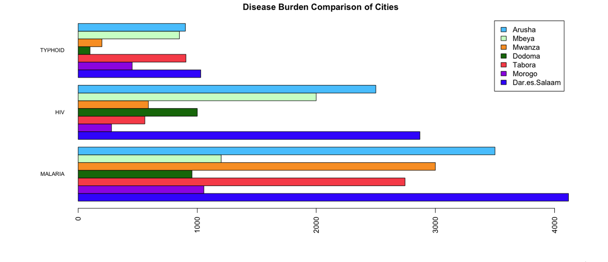

Example: Trends Over Time
A hospital administrator wants to see the trends in disease burden during an 8-month period. For the nine diseases of interest, she queries her hospital’s OpenMRS instance for the disease burden for each month. Graphing the data, she discovers that the cases of influenza have decreased while the number of cases of viral meningitis have risen.

Example: Regional Data
A government official wants to know how cities are coping with various diseases. His sends a query to OpenMRS instances at seven different cities with parameters that specify the diseases of interest. By tallying the results, the official is able to visually compare the disease burden between the cities and see that Dar.es.Salaam has the largest number of cases for all three diseases.